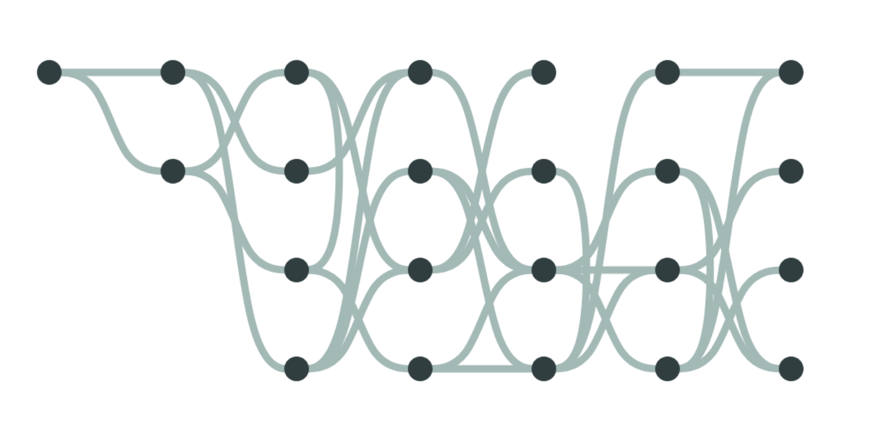

alt.
VIS
A half-day workshop at IEEE VIS 2022
Online only, Sunday October 16th 2022, 9am to 12pm CDT (UTC-5)
Not all work that moves the field forward fits into the model of a standard conference paper or conference talk. The memorability or intellectual impact of work is often inextricably linked to this non-conventional form, whether it is a reflection, provocation, critique, satire, artistic statement, or manifesto. Successful venues like ACM CHI’s alt.chi (“a forum for controversial, risk-taking, and boundary pushing research at CHI”) and various “unconferences” have emerged in the past years as a way of providing an outlet for this sort of unconventional work.
Visualization, and IEEE VIS specifically, which incorporates perspectives in the intersection between art and design, statistics and psychology, we believe is uniquely placed to both generate and value the non-traditional. What’s more, we observed a long-running desire for an outlet for non-traditional work among both long-time attendees as well as those researchers or practitioners who do not currently feel welcome or appreciated in the IEEE VIS environment.
Therefore, based on the (often unexpected) utility of unconventional work, the long standing and successful models of “alternative” conferences, and an expressed interest in bringing these models to the IEEE VIS community, we founded an “alt.VIS” workshop in 2021 as a venue for work that is otherwise difficult to place in the main conference for reasons of form, format, or topic.
The remit of this workshop, mirroring alt.CHI, is relatively broad both in terms of scope of topics and presentation types: our selection criteria are more focused on impact. What sort of work might cause the field to rethink its priorities or ways of operating? What work might highlight under-explored or neglected areas of visualization study or application? What, as per Kant, would “interrupt [our] dogmatic slumber” and stir us to action?
Follow us on Twitter! 
Looking for last year's proceedings? Find 2021 alt.VIS here.
Schedule
Keep your eyes and ears alert -- this year, alt.VIS has bingo! Our paper authors have hidden some special words in their presentations, and it's up to you to catch them. Generate your bingo board using the link below, and give a shout-out in the Discord channel when you get five in a row!
| Time | Content | Presenter |
|---|---|---|
| 9:00 - 9:10 | Welcome | Jane Adams |
| 9:10 - 9:36 | Iris: a journey from the garden to the sky | Derya Akbaba |
| 9:10 - 9:23 | Beyond the Walled Garden: A Visual Essay in Five Chapters | Jo Wood |
| 9:23 - 9:36 | Ride Your Data: Raise your Arms, Scream, and Experience your Data from a Roller Coaster Cart | Vincent Casamayou |
| 9:36 - 10:15 | Moira: visions for and from the future | Arnaud Prouzeau |
| 9:36 - 9:49 |
DyStopia: Into a potential future of IEEE VIS under Plan S | Lonni Besançon |
| 9:49 - 10:02 | I Learn to Diffuse, or Data Alchemy 101: a Mnemonic Manifesto |
Victor Schetinger |
| 10:02 - 10:15 | Me-ifestos for Visualization Empowerment in Teaching (and Learning?) | Tatiana Losev |
| 10:15 - 10:45 | Coffee Break | |
| 10:45 - 11:24 | Hermes: playful tricks and vis in unexpected places | Andrew McNutt |
| 10:45 - 10:58 | The worst graph layout algorithm ever | Sara Di Bartolomeo |
| 10:58 - 11:11 | * (This Name Can Be Automatically Generated) | Matěj Lang |
| 11:11 - 11:24 | Ready Player Viz: Player-Created Strategic Visualizations for Video Games | Jane Adams |
| 11:24 - 11:40 | Closing | Lonni Besançon |
Accepted Papers
 |
Beyond the Walled Garden: A Visual Essay in Five ChaptersJo WoodAI image generation from language prompts has advanced rapidly in little over a year. It is about to change the way we design data visualization. This picture essay considers some of the possibilities and the trade-off between the new expressiveness it provides us with and the potential loss of effectiveness that comes with learning new and more complex graphical languages. It questions whether traditional notions of locatable objects and retinal variables are still applicable in this more sophisticated graphical environment. PDFOpenReview |
Ride Your Data: Raise your Arms, Scream, and Experience your Data from a Roller Coaster CartVincent Casamayou, Yvonne Jansen, Pierre Dragicevic, Arnaud ProuzeauTraditionally, data visualisation has mostly focused on finding visual encodings most suitable for two-dimensional displays and static visual examination tasks. With the emergence of Immersive Analytics, researchers explored the use of physical navigation in 3D spaces and more embodied techniques to interact with data. Yet the sense-making process to explore them has remained more or less the same to the one used on 2D screens. In this paper, we propose to take advantages of immersive technology to propose a more subjective experience of data. We present Ride Your Data (RYD), an immersive experience in which people ride a virtual roller coasters whose shape is dictated by data, allowing them to literally ride on their data, with climbs and drops corresponding to increases and decreases in data values. After presenting the design of RYD, we present and discuss three examples of virtual roller coasters made from real datasets. We then discuss research challenges behind the design of such experiences, and more generally, data-driven immersive experiences. PDFOpenReview |
|
DyStopia: Into a potential future of IEEE VIS under Plan SLonni Besançon, Cody DunneIn this manuscript, we take a look at the dystopian future that could lie ahead of us should we fail to consider the impact of Plan S. It is the year 2030 and researchers from Europe have not been submitted their research to IEEE VIS for a number of years. We quickly retrace what has happened to lead to this unfortunate outcome in the hope to avoid it and start an important conversation that would raise awareness in the VIS community about the importance and immediacy of Plan S. PDFOpenReview |
|
I Learn to Diffuse, or Data Alchemy 101: a Mnemonic ManifestoVictor Schetinger, Velitchko Filipov, Ignacio Pérez-Messina, Ethan Smith, Rodrigo Oliveira de OliveiraIn this manifesto, we put forward the idea of data alchemy as a narrative device to discuss storytelling and transdisciplinarity in visualization. We use text-to-image generative art mainly based on Disco Diffusion (DD) to develop the concept, and structure our argument in ten propositions, as if they were ten issues of a comic novel on data alchemy: Ad Disco Diffusionem. To follow the argument, the reader must immerse themselves in our miro board, and navigate a multimedia semiotic topology that includes comics, videos, code demos, and ergotic literature in a true alchemic sense. Our colorful, sometimes poetic exposition should not distract the reader from the seriousness of the ideas discussed, but ultimately it is about the journey. PDFOpenReview |
|
Me-ifestos for Visualization Empowerment in Teaching (and Learning?)Jagoda Walny, Georgia PanagiotidouOne sunny June afternoon in a remote castle deep in Saarland, a group of visualization researchers of many stripes — from different countries, disciplines and generations — came together to discuss teaching and learning in visualization. Our first order of business in Saarland was to develop a shared vision: a manifesto of sorts that would guide us towards strategies to broaden data visualization skills, make them more common and accessible, and enable this empowerment. That exercise failed. Instead of creating one shared manifesto (who are we to do that, anyway?), we took a different, more personal approach. We found inspiration in others' manifestos, we crafted individual value and commitment statements ("me-ifestos"), we shared these with each other and reflected on them. The process of writing these commitment statements was illuminating and motivating. It was a positive experience with such visceral effects that we want to share the feeling with the visualization community. And so we share a collection of "me-ifesto" excerpts from the authors and a call to action: we request that readers craft and share their own. PDFOpenReview |
|
|  | The worst graph layout algorithm everSara Di Bartolomeo, Matěj Lang, Cody DunneGraph layout algorithms strive to improve the utility of node-link visualizations or graph drawings by optimizing for readability criteria. One such criteria that has been widely used is to count edge crossings. Prior work has focused solely on \emphasize{minimizing} the number of edge crossings, including provably-optimal layout algorithms for layered graphs. The research community has completely ignored the other side of the coin - can we optimally maximize edge crossings? This paper answers this question in the affirmative. Our WORSTisfimal layout algorithm produces the most unreadable layered graph drawing. It does so by using linear programming to produce a provably-optimally-awful solution. We hope that this groundbreaking result opens up an entirely new field of inquiry for graph drawing researchers - optimally-worst layout algorithms. PDFOpenReview |
* (This Name Can Be Automatically Generated)Matěj Lang, Filip Kiraa Opálený, Palko Ulbrich, Lev NikolajevičThe scientific community produces many papers with dull and uninteresting titles. We wanted to explore how researchers break these standards and create memorable names. In this work, we present a coherent view of the current naming conventions of IEEE VIS papers and propose an online tool for their automatic generation. We took advantage of the predictable behavior of the naming habits of the vis community, and we compared them with cultural references and paper titles from other scientific fields. Based on our findings, we formed two iterations of vis naming grammar and used the second one in a publicly available tool. Lastly, inspired by similar works, we created a quiz comprising real and fake vis titles. PDFOpenReview |
|
Ready Player Viz: Player-Created Strategic Visualizations for Video GamesJane Adams, Michael Scot DavinroyWe present a survey of the design space of player-created strategic visualizations for video games, to better understand how players make sense of complex game mechanics and incorporate feedback from fellow players. We present several examples of these visualizations, and contrast them to developer-created visualizations, both in information presentation and purpose. We find that there is a rich community-building aspect to visualization development within game 'fandoms', facilitated by cross-platform exchange and iterative development, including: social media, informational 'wikis', and in-game modifications ('modding'). Finally, we consider player-created visualizations in the context of a broader imagining about the future of visualization development for non-game but analogous strategic applications. We maintain a collection of tagged and categorized examples of player-created video game visualizations at https://dev.universalities.com/playerviz.html PDFOpenReview |
Call for Reviews [CLOSED]
This year, alt.VIS used OpenReview for submission reviews. We relied on the VIS community to volunteer additional reviews for the submissions here. We permitted reviewers with conflicts of interest (COIs) to still review, with their conflicts (same lab, former co-author, etc.) declared in the review body. Reviewers were invited to review as many papers as they were interested in, and reviewers had the option to allow their reviews to be published alongside the final version of the paper. All reviews were overviewed by a meta-reviewer. We particularly like "Tips for being a Good Visualization Paper Reviewer" by John Stasko as a resource, with the note that alt.VIS does not use a scoring system for papers and includes an additional acceptance criteria of weirdness (could not be published at any other venue at VIS). Thank you to everyone who volunteered to review this year!
Call for Submissions [CLOSED]
We invite the submission of bold, provocative, unusual, unconventional, thought-provoking works related to visualization in the broad sense. Authors should submit their work via OpenReview here by End of Day (AoE) Friday, July 29th, 2022 [deadline updated!]. Note that the submission itself does not need to have the form of a traditional conference paper: You are welcome to use any template format or medium that works for your submission (this can include, but is not limited to, the familiar TVCG conference format). While alternative presentations (such as websites, videos, zines, or comics) are welcome, each work must include a PDF submission for archiving purposes including at least a title, author names*, an abstract. Traditionally written works should be no longer than 4000 words (not including references). Notifications of acceptance will be shared by Wednesday, August 31st, 2022.
Examples of submissions we encourage include (but are not limited to):
- Provocations, manifestos, or other critiques of visualization research and practice
- Creative and thought-provoking presentations of data (especially unconventional data), either as traditional visualizations or as multimedia presentations or artworks
- Novel and unconventional visualization techniques or design processes
Submissions will be evaluated on clarity, novelty, and their ability to promote productive thought and discussion for the alt.VIS audience. The purpose of this venue is to provide a place for works that fall outside of the purview of the main VIS paper program, and so submissions that would be more at home in the main track are unlikely to be accepted. Please consider taking a look at the submissions from last year’s alt.VIS 2021 for inspiration!
This year, we are introducing the Weirdy Awards which celebrate bizarre or thought-provoking ideas, presentations, or submissions.
Accepted submissions will be made publicly available on the workshop’s webpage and archived on the HAL. Authors are also welcome and encouraged to archive on their repository of choice, e.g. OSF, ArXiv. Submissions will not be archived within the main IEEE VIS conference archive.
If you are unsure of how to submit your work, or if you want to discuss your submission with us, do not hesitate to contact us at alt.vis.workshop@gmail.com
* Authors serving in this workshop's organizing roles should include a COI statement in their PDF.
NOTE FOR EU SUBMITTERS: The alt.VIS workshop is Plan S compliant. 
Organizers

Lonni Besançon
Monash University
@lonnibesancon
lonnibesancon.me

Derya Akbaba
Linköping University
@gotdairyya
gotdairyya.github.io


Arnaud Prouzeau
Inria
@ArnaudProuzeau
aprouzeau.com

Jane Adams
Northeastern University
@artistJaneAdams
universalities.com
Charles Perin
University of Victoria
@charles_perin
charlesperin.net
Questions? Contact us at alt.vis.workshop@gmail.com.